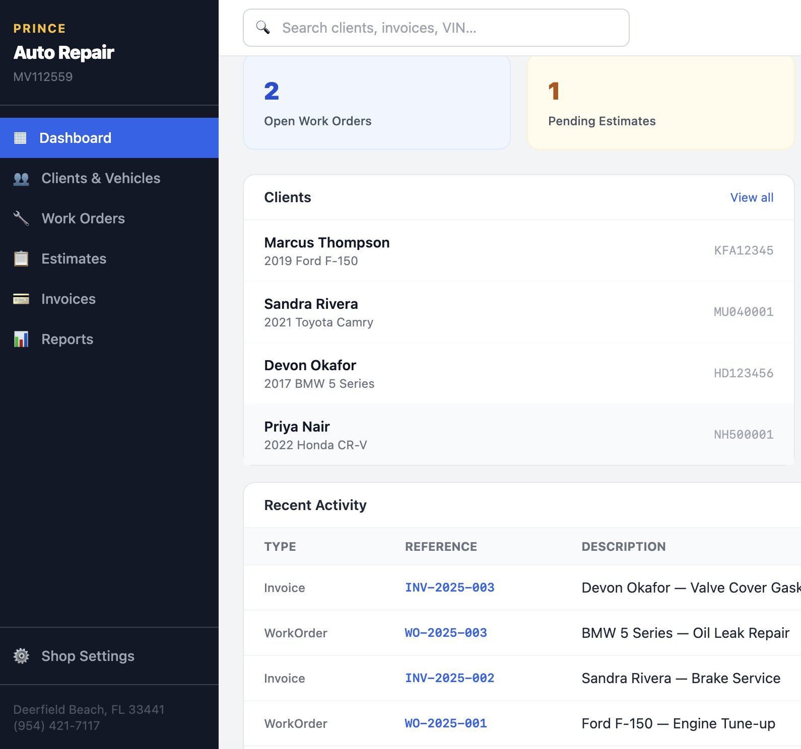
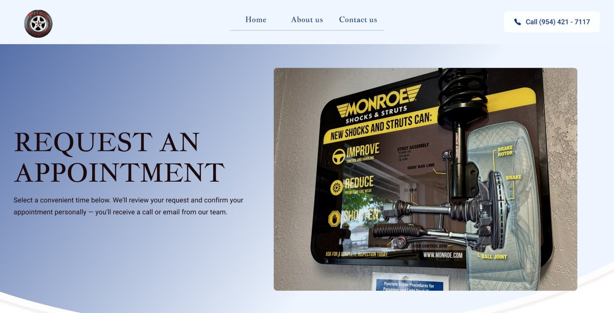
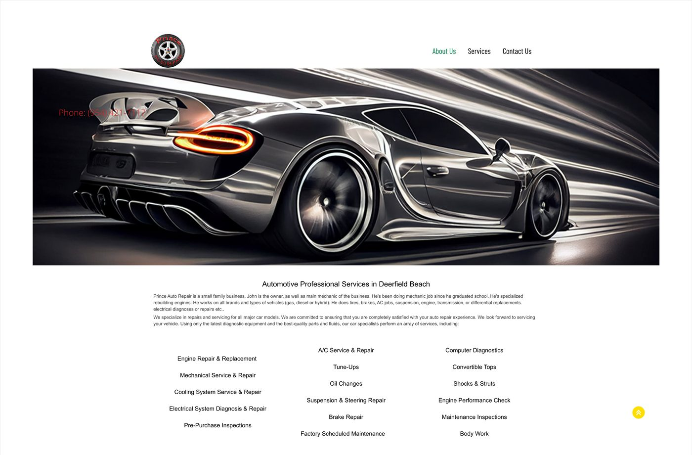
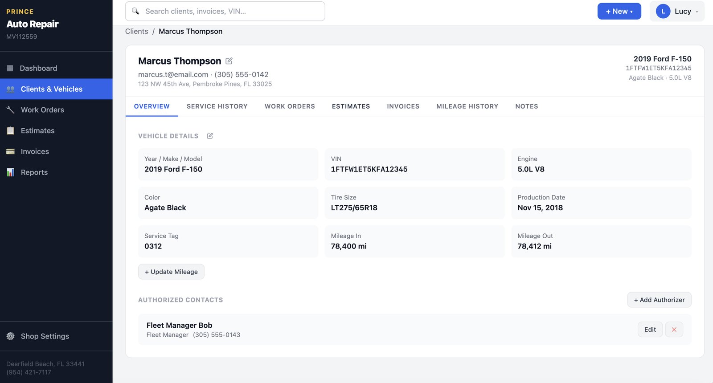
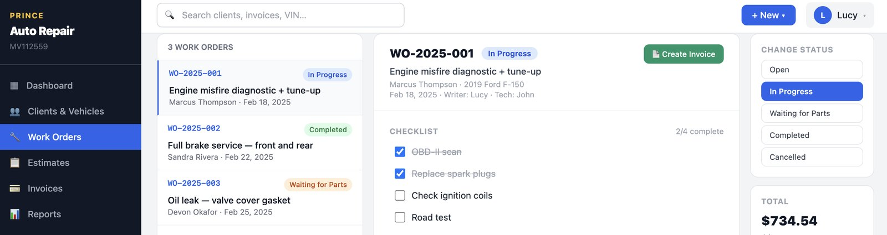
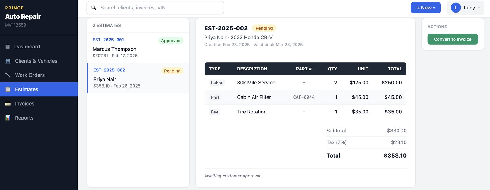
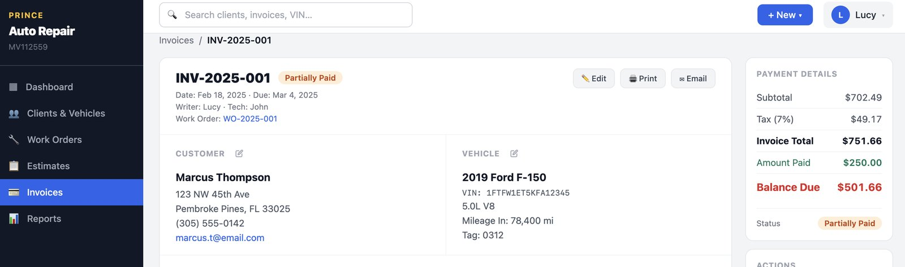
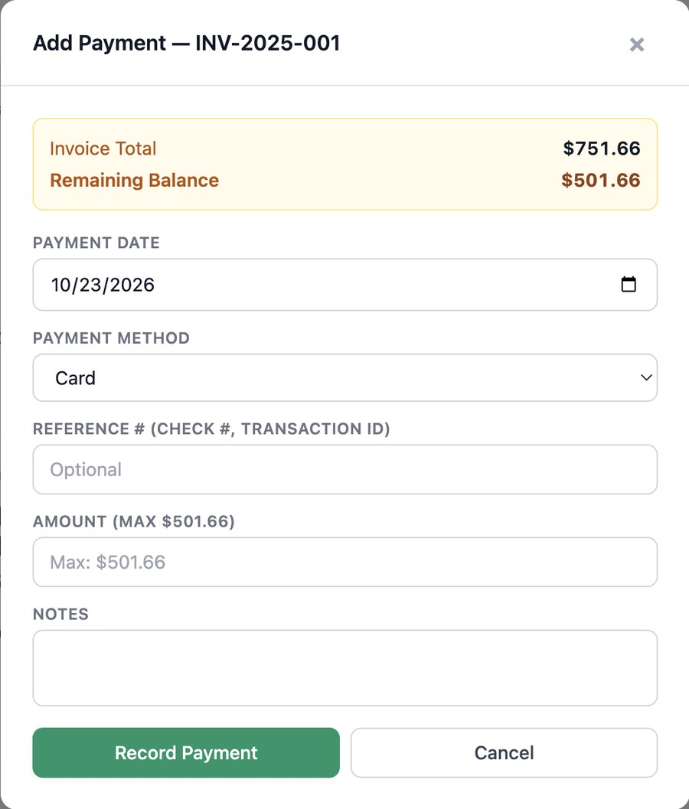
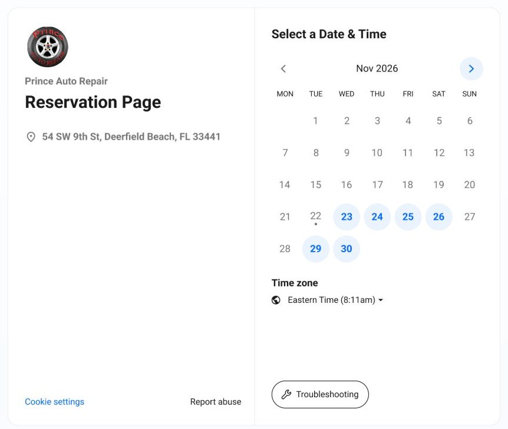

Designing a connected experience from customer booking to shop operations.
What began as a website redesign grew into a broader product once I learned how the shop actually runs: a live customer website and an interactive shop-management prototype.


01 / The brief
Prince Auto Repair asked for a redesign of its customer-facing website. Before designing anything, I wanted to understand how the business actually worked: how a car moves through the shop, and what the team tracks along the way.

02 / Discovery
Several detailed conversations about how the shop runs, its current process, and the features the client needed and wanted.
I went through the platform the shop already used, its features, and its business data to map the real workflow.
I reviewed other auto repair websites for how they present services, build trust, and handle appointments.
What I learned
The website could improve how customers entered the business, but it wouldn't solve the operational needs happening inside the shop.
03 / Product opportunity
The project expanded from one website into two connected experiences.
04 / Designing the shop workflow
Connected records keep customer, vehicle, and job information together as work moves through the shop.

123Step 1 · Client + vehicle
Step 2 · Estimate or work order

45
5
67
8Step 3 · Invoice + payment
Functional interactive front-end prototype with sample data.
05 / From design to prototype
I used AI as part of my design workflow to explore how the product would actually behave, not just how it would look.
ChatGPT + Claude
Organizing requirements, reasoning through product logic, refining workflows, exploring interface options, and troubleshooting implementation questions.
Lovable + AI-assisted development
Turning the designed workflows into a working front end (React, TypeScript, Vite, Tailwind) where real interactions could be tested: converting estimates, recording partial payments, reordering line items.
06 / Business constraint
The prototype clarified both how the product could work and the development scope required to bring it to production. That scope was beyond the client's available budget, so we prioritized the customer-facing experience.
07 / Live production experience
I designed the customer website. A developer built it in WordPress and Elementor, and I reviewed the build and gave revisions before launch. Calendly handles online appointment requests.
Scroll the homepage

08 / Outcome
Live
Interactive prototype
Research can change the definition of the problem.
I was asked for a website. Learning how the shop worked showed a bigger opportunity inside it. AI-assisted prototyping let me take that idea past static screens, and a real budget decided what shipped first.
Contact
I'm looking for full-time Product Designer roles in the U.S. The fastest way to reach me is email.